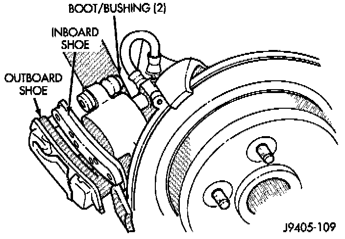
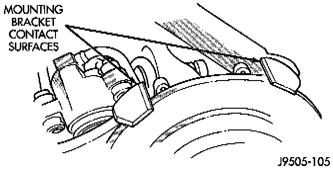
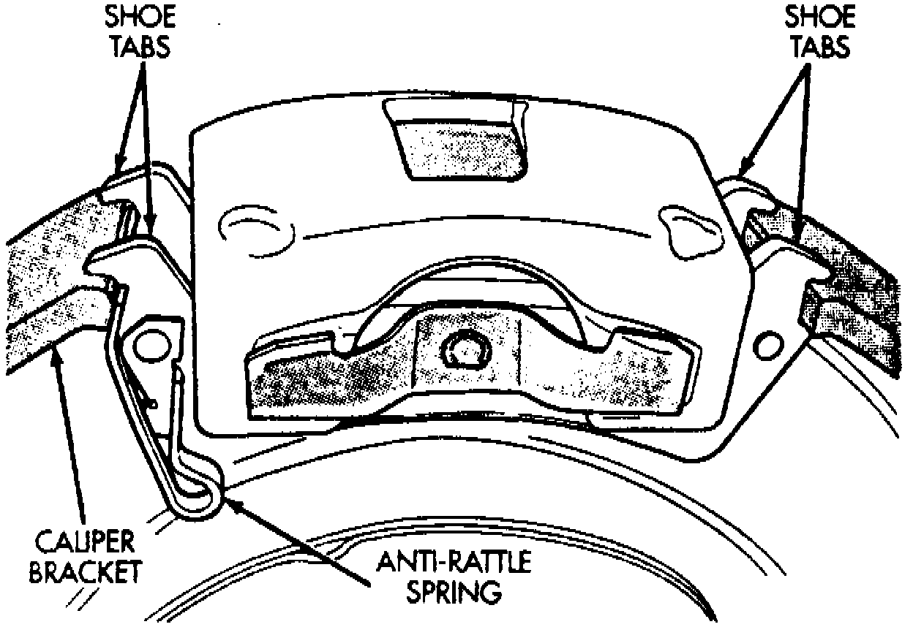

Rear
REMOVAL1. Raise and support vehicle.
2. Remove rear wheel and tire assemblies.
3. Press caliper piston back into caliper bore with large C-clamp.
4. Remove caliper mounting bolts.

5. Rotate caliper rearward and off rotor. Support caliper with wire attached to nearby suspension component. Do not allow brake hose to support caliper weight.
6. Press one corner of outboard shoe inward then pry shoe upward with suitable tool and rotate shoe out of caliper.
7. Pry inboard shoe outward until shoe retainers come out of caliper piston. Then remove shoe from caliper.
8. Inspect caliper mounting bolt bushings and boots. Replace boots if torn or cut. Replace bushings, or bolts if either exhibits wear, or heavy corrosion.

INSTALLATION
1. Clean brake shoe contact surfaces of caliper mounting bracket. Use wire brush or emery cloth.
2. Install brake shoes in caliper.
3. Install caliper over rotor and into mounting bracket.
Fig. 7 Rear Brake Pad Installed Position:

4. Verify that brake shoe lugs are properly seated on caliper mounting bracket. Be sure springs on outboard shoes are also seated against bracket.
5. Verify hose must not be twisted or kinked.
6. Lubricate and install caliper mounting bolts and tighten to 10-20 Nm (7-15 ft. lbs.).
7. Install wheel and tire assemblies.
8. Turn ignition On and run Hydraulic Control Unit (HCU) pump until it shuts off. Then pump brake pedal until shoes are seated and indicator lights go out.
9. Top off brake fluid level if necessary. Use Mopar brake fluid or equivalent meeting SAE J1703 and DOT 3 standards only.